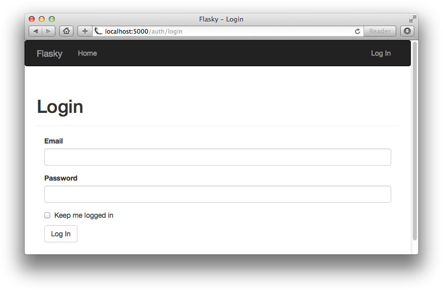
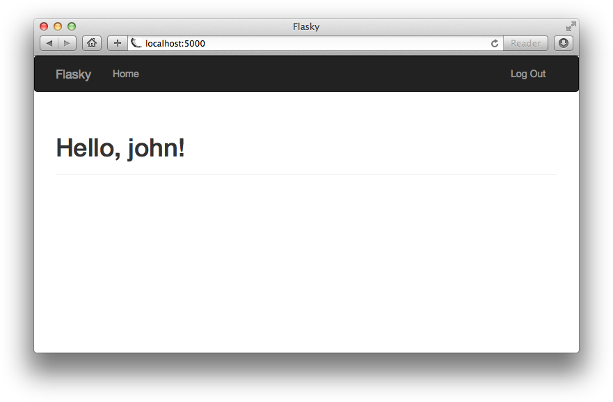

大多数应用程序需要保持追踪用户是谁。当用户连接应用程序时，它们用应用程序authenticate，一个通过它们使得它们的身份已知的过程。一旦应用程序知道用户是谁的时候，应用程序可以提供一个用户化的经历。
大多数常用验证的方法需要用户提供一段身份证明（无论是email还是用户名）以及一个保密的密码。在本章，为了Flasky完整的验证系统被建立起来。
这里有很多非常棒的Python鉴定包裹，但它们中没有一个可以完成所有的事情。用户鉴定解决方案展现在本章使用了很多包裹，并且提供了胶水使得它们很好的工作在一起。这就是将要用到的包裹的清单：
附加的鉴定-明确的包裹，接下来通用的扩展将被用到：
在web应用程序的设计期间，用户信息的安全存储在数据库里是经常被忽视。如果一个攻击者能够闯进你的服务器和进入你的用户数据库入口，那么你承受了你的用户的安全风险，以及这个风险是比你想象的还要大。作为一个已经知道的事实，大多数用户使用相同密码在多个站点，所以甚至如果你不存储任何敏感的信息，进入存储在你的数据库里的密码能给攻击者进入你的用户在其它网站上的账户。
在一个数据库里安全地存储用户密码的关键依赖于不是存储密码本身而是粗存一个密码的hash形式。一个密码散列法函数得到一个密码作为输入和关联一个或者更多的密码的转化形式到密码。结果就是一个新的字符序列，这个序列与原始密码没有相似的地方。弄乱的密码取代了真的密码被核实，因为散列法函数是可以重复的：所给出的相同输入，结果总是相同的。
原来提高用户密码安全性是把一个密码的hash形式存储在数据库中。我以为只要把密码原型存储在数据就可以了。核实密码的时候实际上是用弄乱的密码来进行验证，这样就保证了真的密码不会被发现。弄乱原始密码通过一个散列法函数hashing function来实现。
弄乱密码是一个复杂的任务，很难得到正确的。这里建议你不要部署你自己的解决方案，相反依赖可靠的，通过社区已经被评审过的库。如果你在学习在产生安全的密码散列中调用什么的话，文章Salted Password Hashing - Doing it Right是值得阅读的。
Werkzeug的security模块方便地部署安全的密码散列。这个功能只用两个函数就可以被暴露出来，两个函数用在注册和查证阶段，分别为：
这个函数得到一个简单的文本密码并且返回密码散列为一个字符串，这个字符串能被存储在用户数据库里。method和salt_length不同的值对大多数使用情况是足够的。
这个函数从数据库中得到一个被恢复的密码散列和通过用户送入的密码。一个True返回值表明密码是正确的。
示例8-1展示在第五章里被建立的User模块的变化以达到适应密码散列。
示例8-1. app/models.py：在User模块中使用密码散列
密码散列函数通过一个名叫password的只写属性被部署了。当这个属性被设置时，setter方法将调用Werkzeug的generate_password_hash()函数并且把结果写到password_hash领域。尝试读取password属性将返回一个错误，一旦密码被弄乱显，作为而易见地，原始密码无法被恢复。
verify_password方法得到一个密码并且把密码传递到Werkzeug的check_password_hash()函数里与存储在User模块中的散列版本相比去查证。如果这个方法返回True，那么密码是正确的。
如果你已经克隆了GitHub上的应用程序Git容器，你可以运行git checkout 8a来检查应用程序的这个版本。
密码散列功能现在是完整的并且能在shell里被测试：
注意用户u和u2有完全不同的密码散列，甚至它们都使用了相同的密码。为了确保这个功能在将来继续工作，上面测试能被写作容易被重复的单元测试。在示例8-2中，一个在tests包裹里的新模块被展示出来，带着3个新测试，这3个测试练习User模块最近的变化。
示例8-2. tests/test_user_model.py：密码散列测试
看完这个测试文件，我发现我有一点不明白，就是写了测试文件后怎么启动这个测试呢？我记得第七章中有一处是有关将单元测试的，所以我就回顾一下前面学的内容，第七章->单元测试。而且启动单元测试是自动把tests文件夹里的所有测试py文件都自动运行一遍。我发现要想运行单元测试必须具备以下条件：
蓝图在第七章中被介绍为在应用程序的建立被移动到一个工厂函数里之后一个在全局范围里定义路线的方法。与用户鉴定系统有着联系的路线能被增加到一个auth蓝图里。使用不同的蓝图为不同的应用程序功能的设置是一个很好的保持熟练组织代码的方法。
auth蓝图将被主持在一个有着相同名字的Python包裹。blueprint的包裹构造器建立蓝图对象并且从一个views.py模块导入路线。这被展示在示例8-3中。
示例8-3. app/auth/__init__.py：蓝图建立
展示在示例8-4中的app/auth/views.py模块，导入了蓝图以及使用auth的route装饰器定义了与鉴定有关系的路线。
示例8-4. app/auth/views.py：蓝图路线和方法函数
注意给出的render_template()模板文件被存储在auth文件夹里面。这个文件夹必须被建立在app/templates中，作为Flask期望的模板被关联到应用程序的模板文件夹。通过存储蓝图模板在它们自己的文件夹里，这里没有与main蓝图或者任何其它将来被增加到这里的蓝图命名冲突的风险。
蓝图也能被配置到为模板而有的它们自己单独的文件夹。当多个模板文件夹已经被配置了的时候，render_template()函数首先为应用程序搜索已被配置的模板文件夹，然后搜索通过蓝图定义的模板文件夹。
auth蓝图在create_app()工厂函数里需要被附加到应用程序上，作为展示在示例8-5中。
示例8-5. app/__init__.py：蓝图附件
在蓝图注册中url_prefix自变量是可选的。当被用的时候，所有被定义在蓝图里的路线将带着给出的前缀被注册，在这种情况中/auth。例如，/login路线将被注册为/auth/login，然后完整有资格的URL在开发web服务器下于是会变成http://localhost:5000/auth/login。
如果你已经克隆了GitHub上的应用程序Git容器，你可以运行git checkout 8b来检查应用程序的这个版本。
当用户登录应用程序的时候，它们的鉴定状态不得不被记录下来，记录了它们经过不同的页面。Flask-Login是一个小的但非常有用的扩展，这个扩展专攻管理这一个用户鉴定系统的特殊方面，没有被约束到一个准确的鉴定机制。
作为一开始，扩展需要被安装在虚拟环境里：
在Windows xp系统中的git bash中安装过程展示如下： Collecting flask-login Downloading Flask-Login-0.3.2.tar.gz Requirement already satisfied (use --upgrade to upgrade): Flask in d:\flasky\venv\lib\site-packages (from flask-login) Requirement already satisfied (use --upgrade to upgrade): itsdangerous>=0.21 in d:\flasky\venv\lib\site-packages (from Flask->flask-login) Requirement already satisfied (use --upgrade to upgrade): Jinja2>=2.4 in d:\flasky\venv\lib\site-packages (from Flask->flask-login) Requirement already satisfied (use --upgrade to upgrade): Werkzeug>=0.7 in d:\flasky\venv\lib\site-packages (from Flask->flask-login) Requirement already satisfied (use --upgrade to upgrade): MarkupSafe in d:\flasky\venv\lib\site-packages (from Jinja2>=2.4->Flask->flask-login) Building wheels for collected packages: flask-login Running setup.py bdist_wheel for flask-login: started Running setup.py bdist_wheel for flask-login: finished with status 'done' Stored in directory: C:\Documents and Settings\Administrator\Local Settings\Application Data\pip\Cache\wheels\87\fe\9e\b88482e88c4cc95c91614eb13225740b4d9e21f1fbcd098b58 Successfully built flask-login Installing collected packages: flask-login Successfully installed flask-login-0.3.2
为了能与应用程序的User模块一起工作，Flask-Login扩展需要少量方法被部署。所需的方法被展示在表格8-1中。
这四种方式能作为模块类里的方法被直接执行，但作为一个更容易的替代选择，Flask-Login提供了一个UserMixin类，这个类有默认的执行，这些执行为大多数情况都是适合的。升级后的User模块被展示在示例8-6中。
示例8-6. app/models.py：更新User模块以达到支持用户登录
注意那一个email区域也被增加了。在这个应用程序中，用户将用email登录，因为与他们的用户名字来比较的话，用户们是比较少的可能忘掉他们的邮件地址。
Flask-Login被初始化在应用程序工厂函数里，被展示在示例8-7中。
示例8-7. app/__init__.py：Flask-Login初始化
LoginManager对象的session_protection属性能被设置成None，'basic'，或者'strong'提供不同安全的级别防止用户会话干涉。使用'strong'设置，如果发现一个变化的话，Flask-Login将记录客户端的IP地址和浏览器代理和将要登出的用户。login_view属性为登录页面设置端点。再次访问是因为登录路线是在一个蓝图里，需要用蓝图的名字作为前缀。
最后，Flask-Login需要应用程序建立一个回调函数，回调函数加载一个用户，被给出的标识符。这个函数被展示在示例8-8中。
示例8-8. app/models.py：用户加载回调函数
用户加载回调函数接收到一个用户标识符作为一个Unicode字符串。函数的返回值必须是有效的用户对象或者None。
为了保护一个路线以至于只能被鉴定过的用户通过，Flask-Login提供了一个login_required装饰器。一个装饰器用法的例子在下面：
如果这个路线被一个没有鉴定的用户通过了，Flask-Login将阻止请求反而发送用户到登录页面。
登录表单将被呈现给用户一个email地址的文本区域，一个密码区域，一个“记住我”选择框，以及一个提交按钮。Flask-WTF表单类被展示在示例8-9中。
示例8-9. app/auth/forms.py：登录表单
email区域获得Length()的优势和被WTForms提供的Email()有效性。PasswordField类代表一个使用了type="password"的<input>元素。BooleanField类代表了一个选择框。
模板与被存储在auth/login.html里的登录页面常常在一起。这个模板只需要使用Flask-Bootstrap的wtf.quick_form()宏翻译表单。图示8-1展示了被web浏览器翻译过的登录表单。
图示8-1. 登录表单 
在base.html模板里导航栏使用了一个Jinja2条件句来显示“登记”或“登出”链接，这些链接依赖当前用户的登录状态。这个条件句被展示在示例8-10里。
示例8-10. app/templates/base.html：登记和登出导航栏链接
用在条件句里的current_user变量通过Flask-Login被定义，并且是自动地被用在方法函数和模板上。这个变量包含用户现在已登录，或者如果用户没有登录的话一个代理匿名用户对象。匿名用户对象对is_authenticated()方法的反应是False，所以这是一个方便的方法来知道此时的用户是否已经登录了。
login()方法函数的部署被展示在示例8-11中。
示例8-11. app/auth/views.py：登记路线
方法函数建立了一个LoginForm对象并且使用这个对象如第四章中的简单表单一样。当请求是GET类型的时候，方法函数只翻译模板，反之显示表单。当表单被提交到一个POST请求里，Flask-WTF的validate_on_submit()函数验证表单变量，然后尝试让用户登录。
为了达到让一个用户登录，函数通过加载从数据库来的用户开始使用email提供给表单。如果所给email地址是存在的一个用户，然后含着带有从表单来的密码的verify_password()方法被调用。如果密码是有效的，Flask-Login的login_user()函数带着用户登录并且一个布尔类型的可选项“记住我”也会随着表单被提交。当浏览器窗口被关闭时，这个自变量的一个False值引起用户会话终止，所以用户将不得不下次再次登录。一个True值引起一个长期cookie被设置在用户的浏览器里，并且带有用户会话能被恢复的效果。
按照第四章中讨论的Post/Redirect/Get模式，POST请求提交的登录证书随着一个重定向结束，但这里有2个URL目的地的可能。如果登录表单被呈现给用户防止没鉴定的通过一个被保护的URL，那么Flask-Login保存原始URL到next疑问字符串自变量里，从request.args字典来的变量能被通过。如果next疑问字符串自变量是无效的，反而一个指向主页的重定向就发表出来了。如果通过用户提供的email或密码是无效的，一个闪烁消息被设置，并且表单为了用户重试而重新被翻译。
在一个产品服务器上，登录路线必须被弄成有效的覆盖安全的HTTP，那样表单数据传送到服务器是加密的。没有安全的HTTP，在传送期间登录证书能被拦截，战胜任何努力拦截的办法是在服务器中输入安全的密码。
登录模板需要被更新到翻译表单。这些变化被展示在示例8-12中。
示例8-12. app/templates/auth/login.html：翻译登录表单
登出路线的部署被展示在示例8-13中。
示例8-13. app/auth/views.py：登出路线
让一个用户登出，Flask-Login的logout_user()函数被调用移除以及重置用户会话。登出是与一个闪烁消息完成的，那个消息确定动作和一个指向主页的重定向。
如果你已经克隆了GitHub上的应用程序Git容器，你可以运行git checkout 8c来检查应用程序的这个版本。这个更新包含一个数据库迁移，所以记住在你检验代码之后运行python manage.py db upgrade。为了确保你有了所有的依赖已经安装，也要运行pip install -r requirements.txt。
为了确认登录功能正在工作，主页能被更新到问候登入的用户名字。模板部分所生产的问候被展示在示例8-14。
示例8-14. app/templates/index.html：问候登录的用户
在这个模板中current_user.is_authenticated()再一次被使用到是否决定用户是已经登入的。
因为没有用户注册功能被建立，一个新的用户能从shell被注册：
先前建立的用户现在能登录了。图示8-2展示了应用程序带有以登录用户的主页。
图示8-2. 成功登录后的主页 
当新的用户想成为应用程序的成员时，他们必须用应用程序注册，以至于他们被应用程序认识以及能登录。在登录页面里的一个链接将发送它们到一个注册页面，在注册页面那它们能输入email地址，用户名和密码。
被用在注册页面的表单请求用户输入一个email地址，用户名，和密码。这个表单被展示在示例8-15中。
示例8-15. app/auth/forms.py：用户注册表单
这个表单使用了从WTForms来的Regexp验证器以确保username区域包含字母，数字，下划线，和一个点。对于验证器的两个自变量跟着正规的表达式是正规的表达式标志和失败时显示的错误消息。
作为一个安全的衡量，密码是输入两遍，但这个步骤使得需要验证两个密码区域有相同的内容，要想做到就用从WTForms来的另外名叫EqualTo验证器。这个验证器附在密码区域中的一个，这个密码区域带着另外给出的区域的名字作为一个自变量。